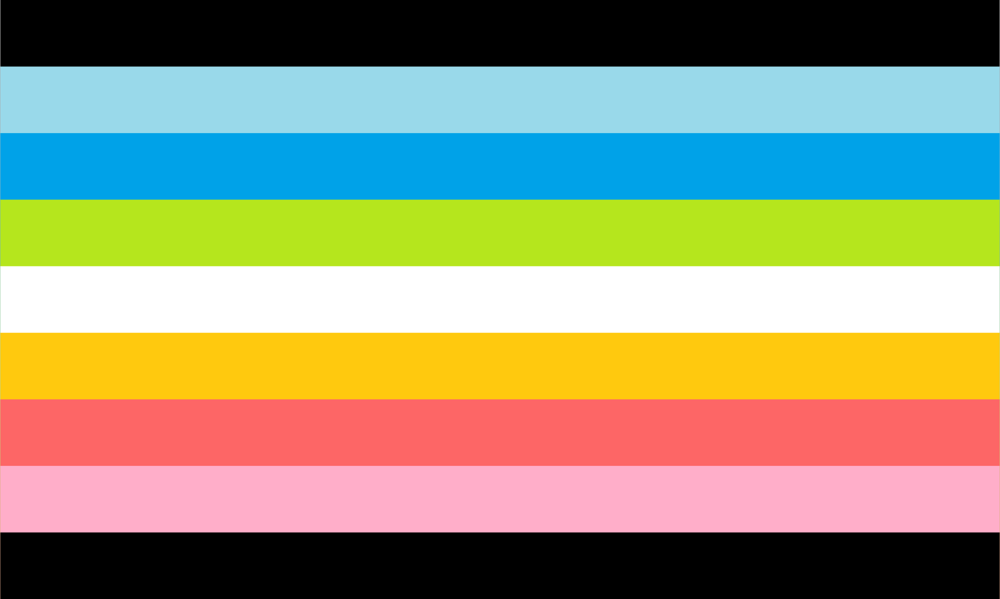

Queer
Definiton
Disclaimer: People can experience identities in different ways. As such, people can identify with a label without exactly matching the definition because identities are fluid.
Queer is an umbrella term that refers to the entire 2SLGBTQIA+ community. It was originally used as a against 2SLGBTQIA+ people, but it has since been reclaimed. However, some people within the community do not like using it because of its negative history, so it should never be used to refer to a person unless they specifically use it to describe themselves.
Queer has many definitions, so the meaning of the term can vary from person to person. It can be used to describe someone who is not exclusively heterosexual, can refer to someone's gender identity or gender expression, and/or describe someone who has fluid identities. Some people use the term as an alternative to labelling their sexuality as gay, lesbian, bisexual, etc. because they find it less restrictive.
Flag History and Meaning
There is no official flag for the queer identity, but the most popular one was created by Pastelmemer on DeviantArt in 2015.
Each color of the queer flag has its own meaning (although the stripes are grouped together):
- Pinks and blues: same-gender attraction
- Orange and green: nonbinary genders
- Black and white: the asexual, aromantic, and agender spectrums
Another queer flag, the purple chevron queer flag, was created by Tumblr user bizexuals in 2016. This flag was created because the previous flag did not consider sensory issues. It features shades of lavender because of their historical association with the 2SLGBTQIA+ community, chevron shapes because of their non-straight lines, and an off-white background color to reference white light (which is made of all the colors of the rainbow).